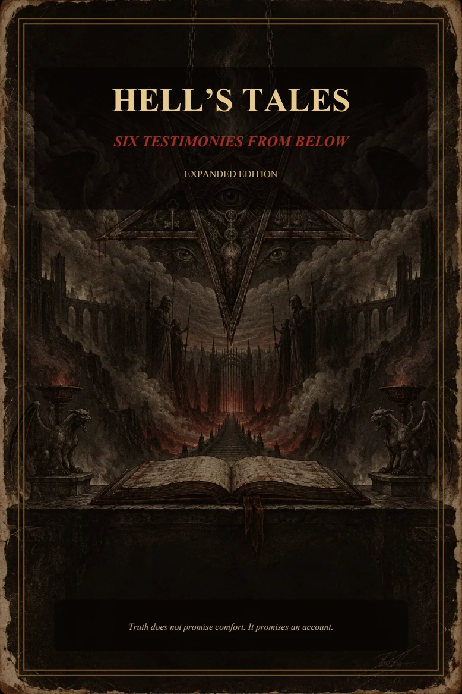

Hell's
†
Tales
Six Testimonies from Below · Expanded Edition
← Previous
Next →
Jump to
Cover
Contents
I · The Bargain
II · The Pious
III · The Accuser
IV · The Tribunal
V · The Furnace Gospel
VI · The Last Sermon
Pause motion
⛧
The Threshold
Read full story as text →
⛧
♱
